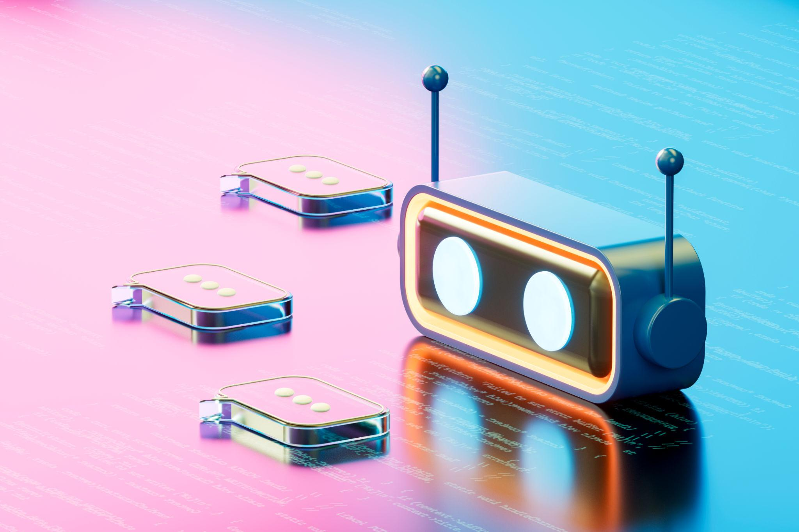

Chatbot

Chatbot
projet personnel — application web
Projet réalisé en binôme sur une durée d’une semaine consistant à développer un chatbot de culture générale en Java fonctionnant directement dans le terminal. Le chatbot était capable de répondre à différentes questions préenregistrées grâce à un système de stockage de données simple.
L’une des principales fonctionnalités du projet était sa capacité d’apprentissage : lorsqu’un utilisateur posait une question à laquelle le chatbot ne pouvait pas répondre, celui-ci demandait la réponse à l’utilisateur puis l’enregistrait automatiquement dans un fichier contenant l’ensemble des questions et réponses connues. Cela permettait au chatbot d’enrichir progressivement sa base de connaissances et d’améliorer ses réponses au fil des utilisations.
Ce projet m’a permis de renforcer mes compétences en Java, en gestion de fichiers, en logique algorithmique ainsi qu’en conception d’interfaces en ligne de commande.
stack technique
Contexte
Projet réalisé en binôme sur une semaine consistant à développer un chatbot de culture générale en Java dans le terminal.
Fonctionnalités
Réponses automatiques, système d’apprentissage, enregistrement des nouvelles réponses dans un fichier texte.
Ce que j'ai appris
Programmation en Java, gestion de fichiers, logique algorithmique et conception d’une interface en ligne de commande.